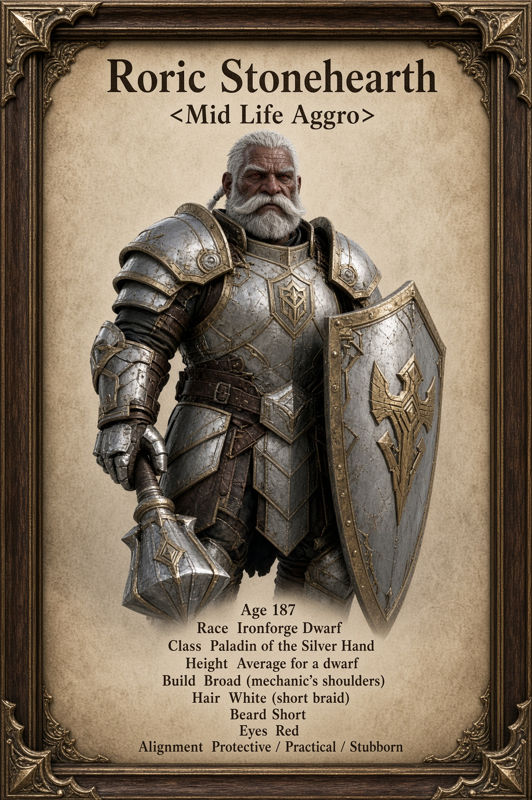

Personality & Roleplay Guide
A practical companion for bringing Roric to life.

His foundation
Roric Stonehearth is an Ironforge dwarf paladin of the Silver Hand, 187 in Year 25. He spent most of his years as ground crew and mechanic at the Ironforge Airfield in Dun Morogh, keeping the strips clear and the machines flying. His nephew Brenn did not return from a caravan run. After that, Roric went to the Hall of Mysteries. He is a late starter. The plate is still newer than the strip.
Personality
Older, practical, and low on humor. Protective first. He measures justice by more than the size of the hammer and is stubborn about keeping people (and machines) in one piece. He spent decades working alone on the strip and does not need company to be useful, but he does not turn it away when the work needs more than one pair of hands. Grief sits close. He will not say he was too late.
With strangers and friends
With strangers he is short and direct. He gives his name if asked and asks practical questions: who’s hurt, what’s broken, which way the trouble went. He is comfortable standing next to someone without filling the silence. With people he is working alongside he speaks to the task and checks whoever was beside him after a fight the same way he once checked a damaged wing. With those he trusts the edges soften a little; he will sit after the work without needing to explain why. He shares practical things more easily than personal ones. He does not joke to keep the mood light.
Under pressure
He gives clear, short instructions and tends to the next need he can address. He thinks like a mechanic first when the situation allows it. He can still be learning the weight of the plate, make a practical correction, or put himself between someone younger and trouble without fuss. Let the other person choose their response.
His voice and humor
Roric speaks plain, gruff Common with the cadence of someone who spent most of his life on an airfield. Short sentences. Practical questions over pious ones. He uses airfield language: clear the strip, check the frame, finish the shift. Humor is rare and dry at most; it is not how he connects. He does not preach. He shows up. When he calls the Light it is short and specific, used when his hands are not steady.
The Light and the work
He serves the Light the way he kept the strip: practical, stubborn, and without a quota. Protective first. The watch got larger after Brenn. He still prefers the fishing line when the work is done, and he still walks the airfield or the high trails when he is home. Mining and Blacksmithing came after the plate because the armor needed the ore and the forge. Brenn’s knife is still on the shelf in the workshop. He has not moved it.
Habits and quiet moments
He might check a strap, clear snow from a strip, or look over whoever was standing beside him after a fight. When the day is done he prefers the line if the water is quiet, or the strip after the lights go low. These are optional cues rather than obligations for every scene. The weathered dark brown skin, haggard face, white short braid, short beard, and bold mustache remain part of his appearance.
Home and private history
Home is the Ironforge Airfield and the mountain, not a sweeping lesson on dwarven ancestry. Brenn did not come back from the caravan. Roric finished the shift, closed up, and sat until the lights went low. He does not talk about the caravan much. Strangers do not automatically know his private history. He will not say he was too late.
Quick roleplay examples
These optional lines and emotes are suggestions, not established past events. Each is under 255 characters.
Greeting: The strip’s clear. You need something, or you just looking for a place to sit?
Offering help: What’s broken? Or who’s hurt?
After a fight: /e looks over the person who was standing beside him, then nods once if they’re still on their feet.
A short call: Light, steady my hands.
Practical correction: That won’t hold. Move it or leave it.
Fishing: /e settles by the water with a line when the work is done and lets the quiet stay quiet.
On the strip: /e walks the edge after the lights go low, checking what still needs clearing.
At an inn: /e takes a seat where he can see the door and sets his hammer within reach.
Working with others: Do your part. I’ll keep the edge.
When asked about the Light: I call it when my hands aren’t steady. Short. Specific.
When asked about Brenn: I finished the shift.
Sitting with someone: /e sits nearby after the work and does not fill the silence.
Hooks for other players
Ask about the airfield, offer to share a quiet stretch of water, or request a hand keeping something (or someone) in one piece. Mention a stubborn engine or a clear strip. Let him choose what he says about Brenn, the caravan, or the knife on the shelf; private history is not automatically visible.